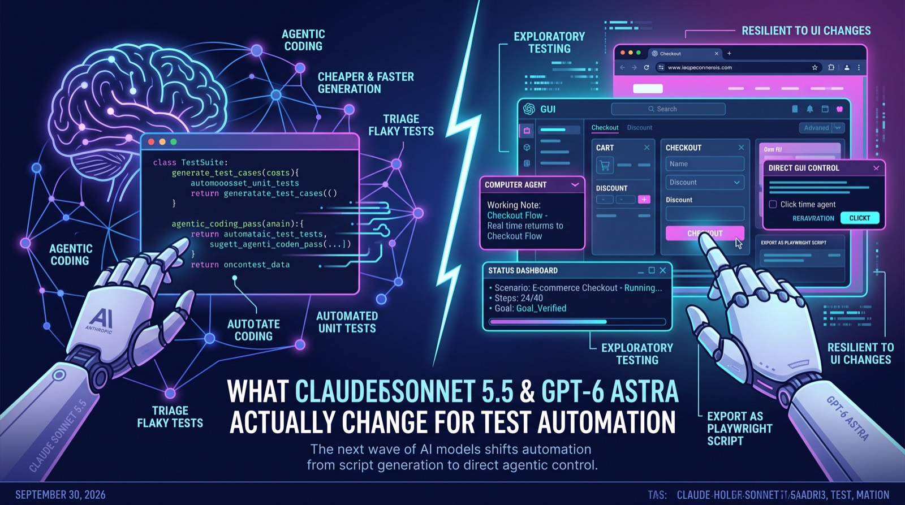

What Claude Sonnet 5.5 and GPT-6 Astra Actually Change for Test Automation
The newest Anthropic and OpenAI models bring cheaper agentic coding and direct GUI control — here's what that means for QA, and what it doesn't.
Two new frontier models shipped in the same month: Anthropic's Claude Sonnet 5.5 and OpenAI's GPT-6 Astra. Neither was built for QA specifically, but both change what's practical to automate, in two different directions — one makes agentic coding and test generation meaningfully cheaper, the other gives agents the ability to operate a graphical interface directly instead of only reading and writing code. For a team deciding where to spend automation effort next, that distinction matters more than either model's marketing name.

Two different upgrades, not one
Sonnet 5.5's headline change is efficiency, not a new capability. On Anthropic's own agentic coding benchmarks it jumps from roughly 10% to over 70% on Terminal-Bench 4.0 compared to the previous Sonnet 5, and early adopters report it needing a third fewer tool calls and about half the shell commands to finish the same task. Output generates over 30% faster, and per-task cost drops by a similar margin at the same per-token price. For testing workflows, that mostly shows up as a cost and speed change: generating a test suite, triaging a flaky-test report, or running an agentic code-review pass on a PR gets noticeably cheaper and faster to iterate on, without changing what kind of testing is newly possible.
GPT-6 Astra is a different kind of upgrade. Its standout capability is computer use — operating software through the same graphical interface a person would, rather than through code or an API. OpenAI reports it scoring 72.6% on OSWorld 2.0, a benchmark for completing multi-step tasks inside real software environments, up from 65.7% for the prior GPT-5.6 model. In Codex, it also gained the ability to keep working notes across context windows on long tasks, rather than relying only on compacting old context away — useful for a session that spans requirement lookup, implementation, and test execution without losing track of what was already checked. That combination — GUI control plus longer working memory — is the part actually new for testing, because it points at agents that can drive a browser or desktop app through a test scenario the way exploratory testers do, instead of only writing scripts against a DOM.
What that looks like for a test flow
The practical shift is from "generate a Playwright script" to "describe the scenario and let the agent operate the app directly," with the option to have it produce a reusable script afterward. A rough shape of that workflow:
# Illustrative — not a specific product's API
agent = ComputerUseAgent(model="gpt-6-astra")
result = agent.run_scenario(
goal="""
Add two items to the cart, apply a single valid discount code,
complete checkout with a saved card, and confirm the order total
matches subtotal minus the discount. Then attempt to apply a
second discount code and confirm it is rejected, not stacked.
""",
app_url="https://staging.example.com",
max_steps=40,
)
assert result.status == "goal_verified"
assert result.evidence.get("stacking_rejected") is True
# Ask the agent to emit a deterministic script from the successful run
script = agent.export_as_playwright(result.trace)The interesting part isn't that the agent can click through a checkout flow — locator-based automation has done that for years. It's that the agent is interpreting the screen the way a person does, so a layout change that would break a brittle CSS selector doesn't necessarily break the scenario, and the same natural-language goal can be pointed at a redesigned UI without rewriting selectors. The export_as_playwright step matters just as much as the run itself: an exploratory run like this is not something you want to keep re-running with an agent in CI, both for cost and for the same oracle problem raised by any AI-authored test — it needs to be turned into something deterministic and reviewed before it becomes a gate.
Pitfalls and limits
None of the benchmark numbers above are QA-specific; OSWorld, Terminal-Bench, and SWE-Bench Pro measure general coding and computer-operation competence, not test quality, so a high score doesn't tell you whether the agent asserts the right thing when it says a goal was "verified." The same oracle problem that affects AI-generated unit tests applies here — an agent can decide a checkout scenario "worked" based on a confirmation screen appearing, without correctly checking that the total was calculated right. Computer-use agents are also non-deterministic run to run, which makes them a poor fit for a CI gate that needs to reliably pass or fail on the same input; they're better suited to exploratory and regression-discovery sessions than to blocking merges. Cost is real too — an agentic run that takes dozens of steps against a live app is considerably more expensive than a scripted test, so running one on every pull request doesn't make sense yet. And GPT-6 Astra specifically shipped with OpenAI classifying it as a model with "critical" cyber capability under their preparedness framework, which is a signal to be deliberate about what tool access and credentials any testing agent built on it actually gets, rather than granting broad environment access by default.
What to do next
Pick one exploratory or regression-discovery task your team currently does by hand — a pre-release smoke pass, or checking a flow after a redesign — and pilot a computer-use agent on it rather than trying to replace scripted CI tests outright. Keep your deterministic, locator- or API-based tests as the actual CI gate, and treat agent runs as a way to generate candidate scenarios and scripts, not as the gate itself. Track token and run cost per agentic test session for a few weeks before deciding how often it's worth running. And before giving any testing agent credentials or broad tool access, check the model provider's system card or safety documentation for that specific model — the capability class of GPT-6 Astra is a reason to scope access deliberately, not a reason to avoid the tool.
Sources
- Introducing Claude Sonnet 5.5 (Anthropic)
- Anthropic Claude Sonnet 5.5 gets faster without a price hike (Help Net Security)
- Anthropic debuts Claude Sonnet 5.5 running 30% faster (SiliconANGLE)
- OpenAI Releases GPT-6 Astra for Coding and Computer Use (InfoQ)
- GPT-6 Astra System Card (OpenAI Deployment Safety Hub)
Dva nova vodeća modela izašla su u istom mjesecu: Claude Sonnet 5.5 kompanije Anthropic i GPT-6 Astra kompanije OpenAI. Nijedan nije napravljen posebno za QA, ali oba mijenjaju ono što je praktično automatizovati, i to u dva različita pravca — jedan čini agentsko kodiranje i generisanje testova znatno jeftinijim, a drugi daje agentima mogućnost da direktno upravljaju grafičkim interfejsom, umjesto da samo čitaju i pišu kod. Za tim koji odlučuje gdje da uloži sljedeći napor u automatizaciju, ta razlika je bitnija od marketinškog imena bilo kog od ta dva modela.
Dva različita unapređenja, ne jedno
Glavna promjena kod Sonnet 5.5 je efikasnost, a ne nova sposobnost. Na Anthropic-ovim benchmarkovima za agentsko kodiranje skače sa otprilike 10% na preko 70% na Terminal-Bench 4.0 u poređenju sa prethodnim Sonnet 5, a prvi korisnici navode da mu treba trećina manje poziva alata i otprilike upola manje shell komandi da završi isti zadatak. Izlaz se generiše preko 30% brže, a cijena po zadatku pada za sličan procenat, uz istu cijenu po tokenu. U QA procesima to se uglavnom vidi kao promjena u cijeni i brzini: generisanje skupa testova, trijaža izvještaja o nestabilnim testovima ili agentski code review na PR-u postaju primjetno jeftiniji i brži za iteriranje, ali se ne mijenja vrsta testiranja koja je sada moguća.
GPT-6 Astra je drugačija vrsta unapređenja. Njegova najistaknutija sposobnost je upravljanje računarom (computer use) — rad sa softverom kroz isti grafički interfejs koji bi koristila osoba, umjesto kroz kod ili API. OpenAI navodi rezultat od 72,6% na OSWorld 2.0, benchmarku za izvršavanje višekoračnih zadataka u stvarnim softverskim okruženjima, u odnosu na 65,7% prethodnog modela GPT-5.6. U Codex-u je dobio i mogućnost da vodi radne bilješke kroz više kontekstnih prozora na dugim zadacima, umjesto da se oslanja samo na sažimanje starog konteksta — korisno za sesiju koja obuhvata pregled zahtjeva, implementaciju i izvršavanje testova, a da se ne izgubi trag o tome šta je već provjereno. Ta kombinacija — kontrola GUI-ja plus duža radna memorija — ono je što je zaista novo za testiranje, jer upućuje na agente koji mogu da provedu pretraživač ili desktop aplikaciju kroz testni scenario onako kako to rade istraživački testeri, umjesto da samo pišu skripte nad DOM-om.
Kako to izgleda u jednom testnom toku
Praktična promjena je prelazak sa "generiši Playwright skriptu" na "opiši scenario i pusti agenta da direktno upravlja aplikacijom", uz mogućnost da nakon toga napravi skriptu za ponovnu upotrebu. Grubi oblik takvog toka rada:
# Illustrative — not a specific product's API
agent = ComputerUseAgent(model="gpt-6-astra")
result = agent.run_scenario(
goal="""
Add two items to the cart, apply a single valid discount code,
complete checkout with a saved card, and confirm the order total
matches subtotal minus the discount. Then attempt to apply a
second discount code and confirm it is rejected, not stacked.
""",
app_url="https://staging.example.com",
max_steps=40,
)
assert result.status == "goal_verified"
assert result.evidence.get("stacking_rejected") is True
# Ask the agent to emit a deterministic script from the successful run
script = agent.export_as_playwright(result.trace)Zanimljivo nije to što agent može da prokliče kroz checkout — automatizacija zasnovana na lokatorima to radi godinama. Zanimljivo je to što agent tumači ekran onako kako to radi čovjek, pa promjena rasporeda koja bi pokvarila krhki CSS selektor ne mora nužno da pokvari scenario, a isti cilj opisan prirodnim jezikom može se usmjeriti na redizajniran UI bez prepravljanja selektora. Korak export_as_playwright bitan je koliko i samo pokretanje: ovakvo istraživačko pokretanje nije nešto što želite stalno da ponavljate sa agentom u CI-ju, i zbog cijene i zbog istog problema "orakla" koji ima svaki test napisan uz pomoć AI-ja — mora se pretvoriti u nešto determinističko i pregledati prije nego što postane kapija.
Zamke i ograničenja
Nijedan od gore navedenih rezultata nije specifičan za QA; OSWorld, Terminal-Bench i SWE-Bench Pro mjere opštu kompetenciju u kodiranju i upravljanju računarom, a ne kvalitet testova, tako da visok rezultat ne govori da li agent provjerava pravu stvar kada kaže da je cilj "verifikovan". Isti problem orakla koji pogađa unit testove generisane AI-jem važi i ovdje — agent može zaključiti da je checkout scenario "prošao" samo zato što se pojavio ekran s potvrdom, bez ispravne provjere da je ukupan iznos dobro izračunat. Agenti za upravljanje računarom su i nedeterministički od pokretanja do pokretanja, što ih čini lošim izborom za CI kapiju koja mora pouzdano da prođe ili padne za isti ulaz; bolje odgovaraju sesijama istraživačkog testiranja i otkrivanja regresija nego blokiranju merge-a. Cijena je takođe stvarna — agentsko pokretanje od više desetina koraka nad živom aplikacijom znatno je skuplje od skriptovanog testa, pa pokretanje na svakom pull requestu za sada nema smisla. A GPT-6 Astra je izašao uz to da ga OpenAI u okviru svog preparedness okvira klasifikuje kao model sa "kritičnim" sajber sposobnostima, što je signal da treba pažljivo odlučiti koji pristup alatima i koje kredencijale dobija bilo koji testni agent zasnovan na njemu, umjesto da mu se podrazumijevano da širok pristup okruženju.
Šta dalje
Izaberite jedan zadatak istraživačkog testiranja ili otkrivanja regresija koji vaš tim trenutno radi ručno — smoke prolaz prije izdanja ili provjeru toka nakon redizajna — i na njemu isprobajte agenta za upravljanje računarom, umjesto da odmah pokušavate da zamijenite skriptovane CI testove. Zadržite svoje determinističke testove, zasnovane na lokatorima ili API-ju, kao stvarnu CI kapiju, a agentska pokretanja tretirajte kao način da dobijete kandidate za scenarije i skripte, ne kao samu kapiju. Nekoliko nedelja pratite trošak tokena i pokretanja po agentskoj testnoj sesiji prije nego što odlučite koliko često se isplati pokretati je. I prije nego što bilo kom testnom agentu date kredencijale ili širok pristup alatima, provjerite system card ili bezbjednosnu dokumentaciju dobavljača za taj konkretan model — klasa sposobnosti modela GPT-6 Astra razlog je da pristup ograničite promišljeno, a ne razlog da izbjegavate alat.
Izvori
- Introducing Claude Sonnet 5.5 (Anthropic)
- Anthropic Claude Sonnet 5.5 gets faster without a price hike (Help Net Security)
- Anthropic debuts Claude Sonnet 5.5 running 30% faster (SiliconANGLE)
- OpenAI Releases GPT-6 Astra for Coding and Computer Use (InfoQ)
- GPT-6 Astra System Card (OpenAI Deployment Safety Hub)